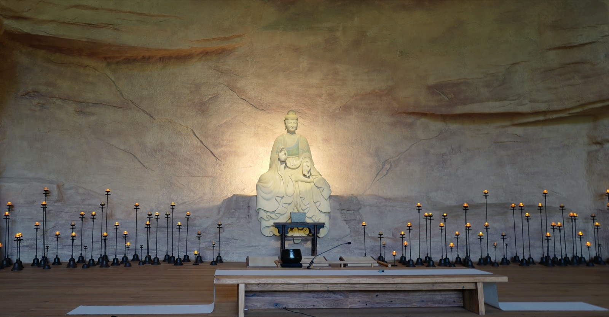
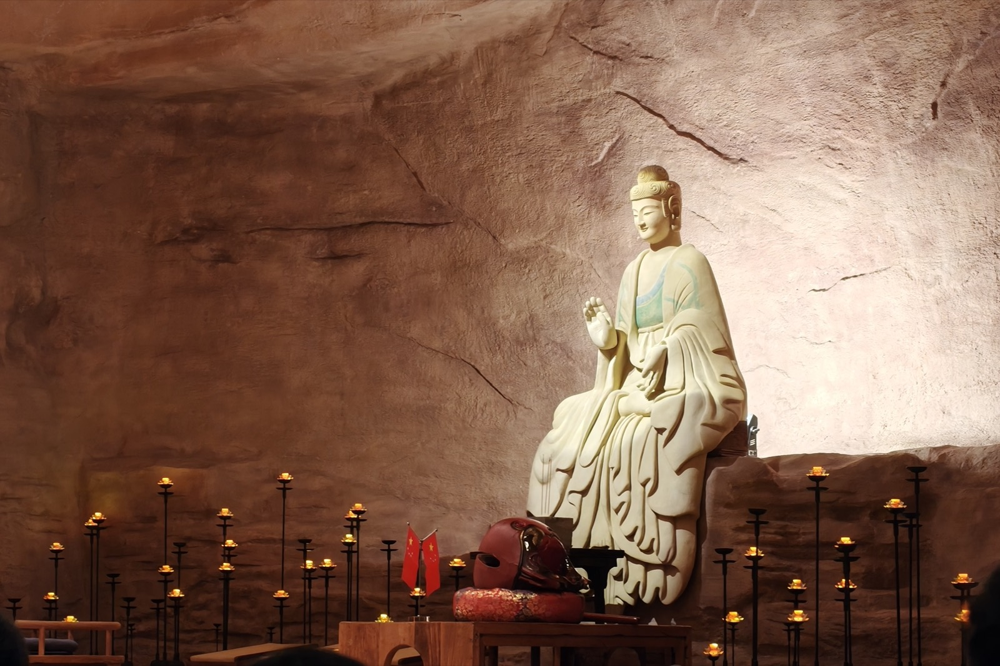

一、唱三宝歌

人天长夜，宇宙黮黯，谁启以光明？三界火宅，众苦煎迫，谁济以安宁？大悲大智大雄力，南无佛陀耶！昭朗万有，衽席群生，功德莫能名！今乃知，唯此是，真正皈依处。尽形寿，献身命，信受勤奉行！
二谛总持，三学增上，恢恢法界身。净德既圆，染患斯寂，荡荡涅槃城。众缘性空唯识现，南无达摩耶！理无不彰，蔽无不解，焕乎其大明！今乃知，唯此是，真正皈依处。尽形寿，献身命，信受勤奉行！
依净律仪，成妙和合，灵山遗芳型。修行证果，弘法利世，焰续佛灯明。三乘圣贤何济济，南无僧伽耶！统理大众，一切无碍，住持正法城！今乃知，唯此是，真正皈依处。尽形寿，献身命，信受勤奉行！
二、发心、忏悔、供养
1．发心、忏悔：
我今发心，不为自求人天福报、声闻、缘觉，乃至权乘诸位菩萨，唯依最上乘发菩提心，愿与法界众生一时同得阿耨多罗三藐三菩提。
皈依十方尽虚空界一切诸佛。
皈依十方尽虚空界一切尊法。
皈依十方尽虚空界一切贤圣僧。
如是等一切世界，诸佛世尊，常住在世。是诸世尊，当慈念我：若我此生，若我前生，从无始生死以来，所作众罪，若自作，若教他作，见作随喜；若塔若僧，若四方僧物，若自取，若教他取，见取随喜；五无间罪，若自作，若教他作，见作随喜；十不善道，若自作，若教他作，见作随喜；所作罪障，或有覆藏，或不覆藏，应堕地狱、饿鬼、畜生、诸余恶趣、边地下贱，及蔑戾车，如是等处，所作罪障，今皆忏悔。今诸佛世尊，当证知我，当忆念我。（忆念自己无始以来所作罪业，尤其是近来的不如法行为，于十方诸佛菩萨前生起真诚忏悔之心，并安住于忏悔之心，静默三分钟）
2．修七支供：
所有十方世界中，三世一切人狮子，我以清净身语意，一切遍礼尽无余。
普贤行愿威神力，普现一切如来前，一身复现刹尘身，一一遍礼刹尘佛。
于一尘中尘数佛，各处菩萨众会中，无尽法界尘亦然，深信诸佛皆充满。
各以一切音声海，普出无尽妙言辞，尽于未来一切劫，赞佛甚深功德海。
以诸最胜妙华鬘，伎乐涂香及伞盖，如是最胜庄严具，我以供养诸如来。
最胜衣服最胜香，末香烧香与灯烛，一一皆如妙高聚，我悉供养诸如来。
我以广大胜解心，深信一切三世佛，悉以普贤行愿力，普遍供养诸如来。
我昔所造诸恶业，皆由无始贪瞋痴，从身语意之所生，一切我今皆忏悔。
十方一切诸众生，二乘有学及无学，一切如来与菩萨，所有功德皆随喜。
十方所有世间灯，最初成就菩提者，我今一切皆劝请，转于无上妙法-轮。
诸佛若欲示涅槃，我悉至诚而劝请，唯愿久住刹尘劫，利乐一切诸众生。
所有礼赞供养福，请佛住世转-法-轮，随喜忏悔诸善根，回向众生及佛道。
乃至虚空世界尽，众生及业烦恼尽，如是四法广无边，愿今回向亦如是。
3．念七佛灭罪真言，清洗罪障（七遍）
三、观察修
1．思惟暇满人身蕴含着重大意义，认识到唯有皈依三宝才能实现暇满人身的重大意义。
2．思惟死亡一定，死期不定，死时除佛法外余皆无益，对三宝生起猛烈的皈依之心。
3．念三恶道苦，生起恐惧感，生起求拯求救之心。
4．忆念三宝功德，对三宝生起极大的信心，确定以三宝为人生的依赖及归宿。
四、安住修
1．念诵三皈依：南无布达耶、南无达玛耶、南无僧伽耶。
（在念诵三皈依时，观想六道一切众生在和自己一起念诵，并念念中融入十方三宝的无尽功德中。）
2．止静：观想十方三宝无尽的功德，安住十方三宝的无尽功德中
五、发愿
1．奉行五戒
第一条不杀生：认识到生命的毁灭所造成的痛苦，我发誓培养悲心，学习各种方法来保护人、动物、植物的生命。我决心不杀生，不教人杀，在思想上和生活中不宽恕自己的任何一种杀生行为，同时也不随喜任何人的杀生行为。
第二条不偷盗：认识到由剥削、压迫、偷盗和社会的不公正等等现象所造成的痛苦，我发誓培养慈心，学习各种方法，为人、动物和植物的良好生存状态而努力工作。我发誓，通过与那些真正需要的人分享我的时间、精力和物质财富的方式，来修布施。我决心不偷盗，不将任何属于他人的物品据为己有。我将尊重他人的财产所有权，但我将阻止以人类的痛苦为代价或以地球上其它地区人民的痛苦为代价来为自己谋取利益的行为。
第三条不邪淫：认识到由不正当的性关糸所造成的痛苦，我发誓培养责任心，并学习维护个体、夫妻、家庭和社会的安定与团结的方法。我决心不卷入没有爱和长期承诺的性关系中。为了维护我和他人的幸福，我决心尊重自己和他人的承诺。在我力所能及的范围内，我将做一切事情来保护儿童不受性侵害，防止夫妻关系和各个家庭因不正当的性关系而破裂。
第四条不妄语：认识到由说话心不在焉和没有倾听能力所造成的痛苦，我发誓修习爱语和倾听，以给他人带来幸福和快乐，从而减轻他们的苦恼。明了语言可以创造幸福或制造痛苦，我发誓学习讲实语，讲能够激发人的自信、给人带来快乐和希望的话。我决心不传播不确定的消息、不批评或谴责我没有把握的事情，避免讲会导致分裂或不和的话，或会导致家庭、团体破裂的话。我将尽一切努力来调解和平息所有的矛盾，无论是多么微小的矛盾。
第五条不饮酒：认识到由不适当的消费所造成的痛苦，我发誓通过有觉照的饮食和消费为自己、为家庭、为社会而保持良好的健康，无论是生理方面，还是心理方面。我发誓只吸收那些对维护我个人、我的家人和社会大众的身心健康与和谐有益的东西。我决心不饮酒，不吃有害的食品，不接触不健康的精神产品，比如某些特定的电视节目、杂志、书、电影及谈话等。我知道，用这些"毒品"来损害我的身心就是背叛了我的祖先、我的父母、我的社会和我的后代。我将通过修习既适用于个体也适用于社会的这五戒，使自己心中和社会上的暴力、恐惧、愤怒及混乱状态得到改变。我明白，要改造自我，改造社会，一份合适的戒规是必不可少的。
2．修习四无量心
愿诸众生永具安乐及安乐因，（慈无量）
愿诸众生永离众苦及众苦因，（悲无量）
愿诸众生永具无苦之乐，身心怡悦，（喜无量）
愿诸众生远离贪嗔之心，住平等舍。（舍无量）
六、回向

皈依功德殊胜行，无边胜福皆回向。普愿沉溺诸众生，速往无量光佛剎。
十方三世一切佛，一切菩萨摩诃萨，摩诃般若波罗蜜。